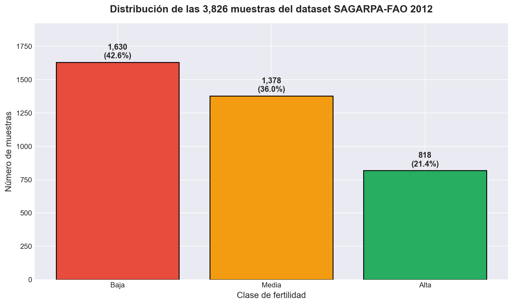
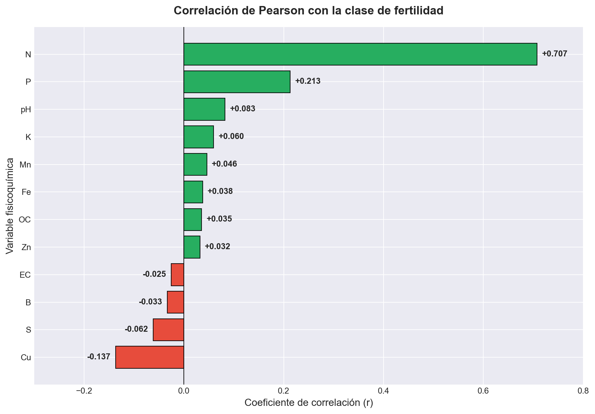
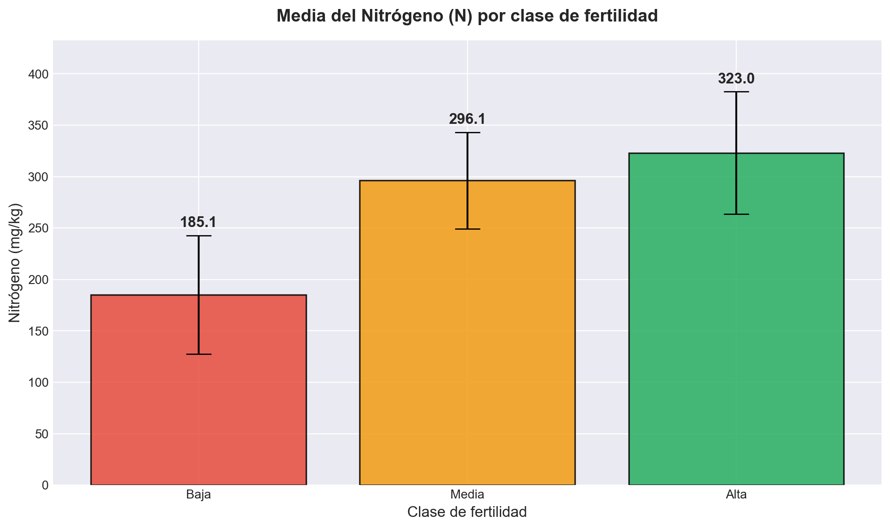
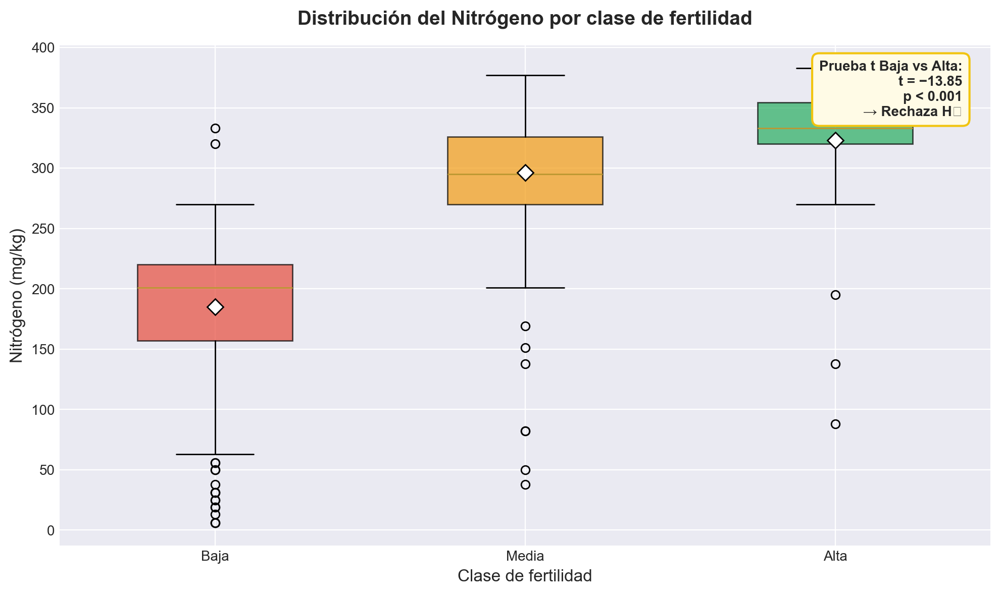
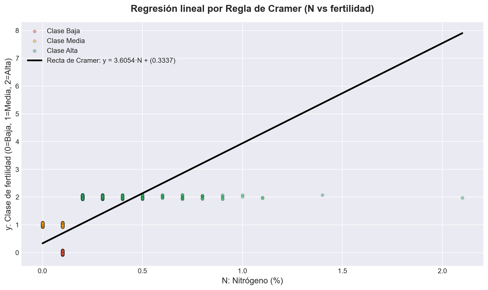
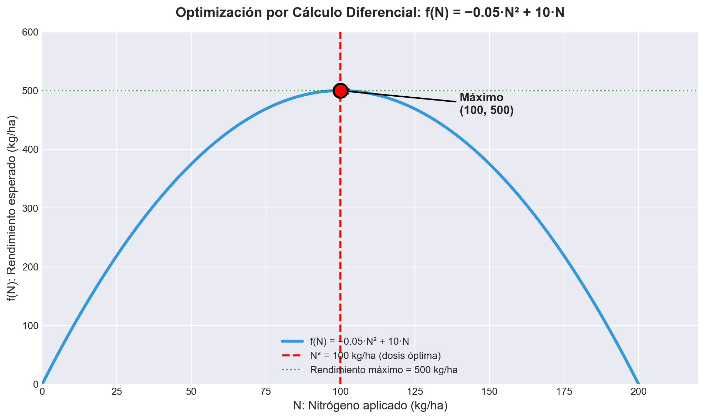
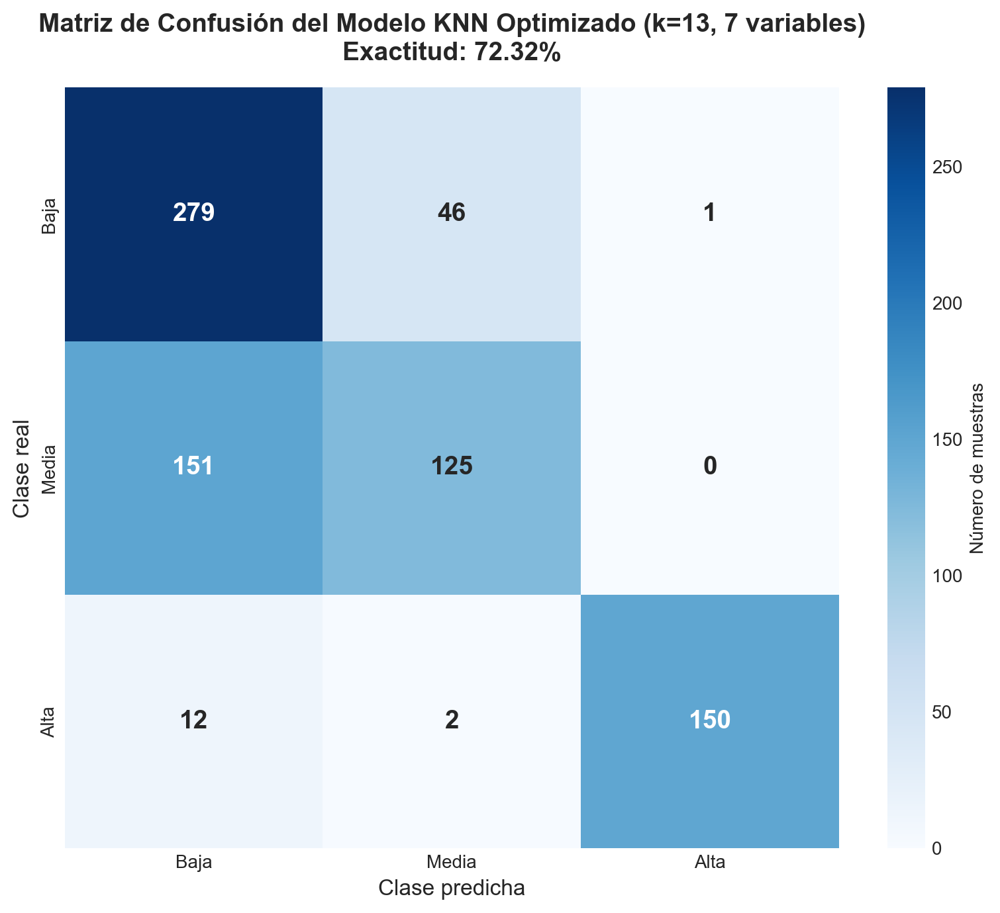
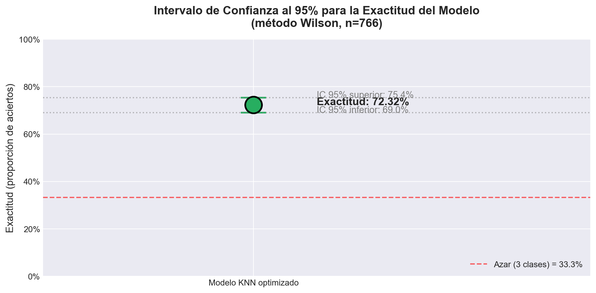

Resumen del proyecto
AgroDataLocal es un sistema que clasifica la fertilidad del suelo de parcelas agrícolas a partir de 16 variables fisicoquímicas, utilizando el algoritmo K-Nearest Neighbors (KNN). El modelo fue entrenado con el dataset oficial nacional mexicano de SAGARPA-FAO (2012), que contiene 3,826 muestras de suelo de los 32 estados de la República.
El propósito es ofrecer a pequeños productores una herramienta accesible para recibir recomendaciones de fertilización basadas en datos reales, reduciendo costos y minimizando el impacto ambiental por sobre-fertilización.
Fuente: Base de datos nacional SAGARPA-FAO 2012, publicada por Arroyo-Cruz et al. (2025) en el European Journal of Soil Science, distribuida bajo licencia CC0 (dominio público).
Análisis estadístico descriptivo
Para cada una de las 16 variables fisicoquímicas se calculan medidas de tendencia central (media, mediana, moda) y medidas de dispersión (varianza, desviación estándar). Estos cálculos se realizan en vivo en tu navegador a partir de las 3,826 muestras del dataset SAGARPA-FAO cargado.
| Variable | Media | Mediana | Moda | Desv. estándar | Varianza | Mín | Máx |
|---|
Distribución de clases
Correlación de cada variable con la fertilidad
Coeficiente de correlación de Pearson calculado sobre las 3,826 muestras. El nitrógeno (N) destaca con r = 0.503, confirmando que es el principal predictor de la fertilidad entre las 16 variables analizadas.
Simulador interactivo
Ajusta los 7 valores fisicoquímicos del suelo que utiliza el modelo (N, SAND, CLAY, CEC, SILT, SAR, Mg) y observa en vivo cómo cambia la predicción del modelo KNN. Usa los botones de preset para cargar valores promedio de cada clase de fertilidad.
Comparación contra perfiles
Predicción en vivo
Visualizaciones del análisis
Las siguientes gráficas resumen los principales hallazgos del análisis realizado sobre el dataset oficial SAGARPA-FAO 2012 (3,826 muestras): distribución de los datos, correlaciones, validación estadística mediante prueba t e intervalo de confianza al 95 %, así como los modelos matemáticos aplicados (regresión por regla de Cramer y optimización por cálculo diferencial).








Acerca del proyecto
Esta aplicación web es el componente interactivo del proyecto integrador AgroDataLocal, desarrollado en el segundo semestre de la Licenciatura en Ciencias de Datos para Negocios.
Tecnologías utilizadas
- HTML5 + CSS3 para la estructura y los estilos.
- JavaScript vanilla para la lógica y el algoritmo KNN.
- Chart.js para las visualizaciones interactivas.
- GitHub Pages para el despliegue.
Metodología matemática
- Estadística descriptiva: media, mediana, moda, varianza, desviación estándar.
- Estadística inferencial: prueba t de dos medias, intervalo de confianza al 95 %.
- Álgebra lineal: distancia euclidiana entre vectores, regla de Cramer.
- Cálculo diferencial: optimización de la dosis de fertilización (N* = 100 kg/ha).
Sobre la exactitud del modelo
El modelo KNN actual alcanza una exactitud del 72.32 % con un intervalo de confianza al 95 % de [69.0 %, 75.4 %], sobre un conjunto de prueba de 766 muestras. La configuración óptima utiliza k = 13 vecinos y 7 variables seleccionadas por correlación (N, SAND, CLAY, CEC, SILT, SAR, Mg).
Aunque se calcularon estadísticas descriptivas sobre las 16 variables originales, la inclusión de todas en el modelo de clasificación introducía ruido y reducía la exactitud al 60.31 %. Una etapa de optimización de hiperparámetros (grid search sobre k) y selección de variables por correlación absoluta permitió mejorar el desempeño en más de 12 puntos sin necesidad de cambiar el algoritmo.
Es importante destacar que la clase Alta se predice con una precisión del 99.3 % y un recall del 91.5 % (F1 = 0.952), lo que significa que el modelo identifica suelos de alta fertilidad de forma muy confiable. Esto representa una mejora cualitativa importante frente al modelo preliminar (880 muestras, 12 variables), que nunca lograba predecir esta clase debido al desbalance del dataset original.
Glosario de variables
Las 16 variables fisicoquímicas analizadas se describen a continuación (las marcadas con asterisco son las que utiliza el modelo KNN actual):
| Sigla | Nombre completo | Unidad | Descripción |
|---|
Conjunto de datos
3,826 muestras de suelo procedentes de los 32 estados de la República Mexicana, surveyed entre diciembre 2011 y abril 2012 por la Secretaría de Agricultura (SAGARPA) en colaboración con la FAO. Las 16 variables fisicoquímicas analizadas son:
- Químicas: pH (acidez), EC (conductividad), OM (materia orgánica), N (nitrógeno), P (fósforo), K (potasio), Ca (calcio), Mg (magnesio), Na (sodio).
- Físicas: BD (densidad aparente), SAND (arena), SILT (limo), CLAY (arcilla).
- Capacidad de intercambio: CEC (capacidad de intercambio catiónico), SAR (razón de adsorción de sodio), ESP (porcentaje de sodio intercambiable).
Cita: Arroyo-Cruz, C.E. et al. (2025). Synthesis of a National Soil Dataset Across Productive Land in Mexico. European Journal of Soil Science. DOI: 10.6073/pasta/5d435c1459d48dc26ddf93ad933ca4b0.